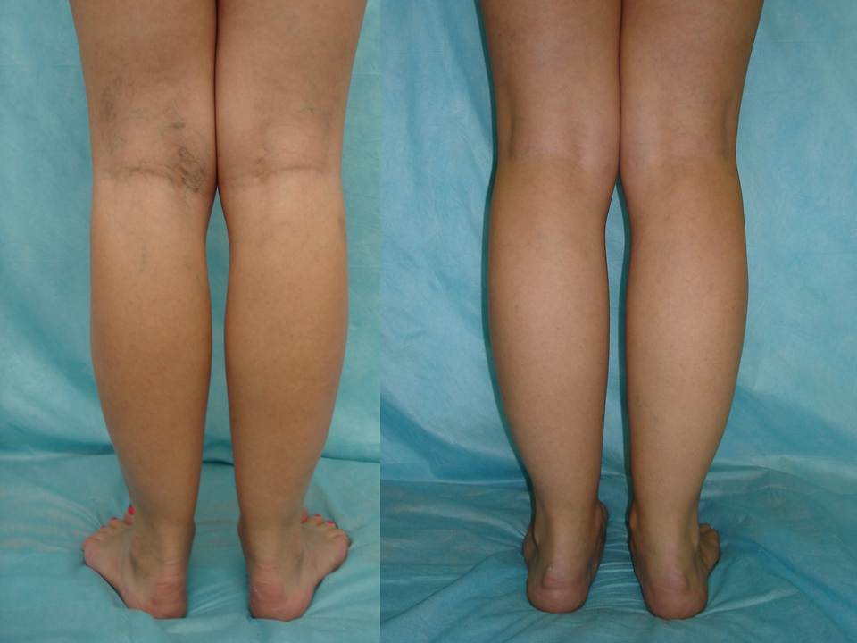

Kim's blog
How I got rid of varicosity in 1 week
Published: | Author: Kim (Philippines)

Hi there, I'm with you guys again! I'd like to share my little joy with you...Inspite of everything I managed to GET RID of varicosity at home just in a week!!!
Do you remember that about a year ago I wrote I had a terrible pain in my legs and developed varicose? I asked for your advice - how to get rid of it.
Well, I tried all folk methods including birch buds and other worthless stuff, plus medications to improve the bloodflow and compression tights and so on. IT'S ALL TOTAL RUBBISH. It doesn't help. No use.
I went to the doctors, but instead of helping me they reproached me for delaying the treatment. I took a week unpaid leave at work. I had a depression, I pondered over the ways to get rid of varicose and return beauty and health to my legs and searched for different methods of treatment on the internet.
Salvation from varicosity has finally been found?!
Once when serfing blogs on the web a small note written by a phlebologist from New York on some medical forum caught my eye. It said that in our country varicose veins treatment is not effective because traditional medicine doesn't treat the cause of the disease but only its symptoms.
The doctor referred to a new antivaricose cream Varikosette , which had a very high percentage of positive results. I searched for information concerning where to find this cream and found this store.
At first I didn't really trust all that because there're so many things advertised on TV...but I found a lot of good reviews on this cream so I decided to order.
So I ordered Varikosette. The package was delivered approximately in a week. I unpacked everything, read the directions and started to use it.
What are the results? Is varix cured now?
I started to use this cream following the directions. And guess what? Just 5 days after that sweeling and varicose veins started to disappear right before my eyes, I was so flabbergusted my jaw dropped!!!! I got rid of VARICOSITY!!! Just in 5 days!!!!! Can you believe that??? I coudln't believe my eyes...My legs cleared of varicose spider veins, they became beautiful and stopped hurting!!!! I wasn't wrong and I didn't go nuts! I can't descibe how happy I am. The last time I was so happy was maybe 20 years ago or so:)

Now I feel I'm an absolutely healthy person . Ha! I'm even grateful for my illness - varix taught me to value the things I have and look at trifling life problems differently. I try not to think what a wreck I could have become if it hadn't been for this cream. Now in my life there's no room for gloomy and sulky thoughts, only positive!
I'm insanely glad that things turned out this way. I got rid of varix and at the same time I realized that the problem of many of us is that the simplest things do not seem effective for us. And the most complicated things like surgery seem more effective. But they're not. Anyone can cure varicose with a simpler, quicker and safer method. It's verified!
For those who is interested, I placed an order on this website. This is the only certified company in Philippines, which sells Varikosette. As regards the shipping, the package is sent by mail, C.O.D. shipment. So everything's safe.
The price for Varikosette is now reduced, so hurry up to order!
Well, I hope this information was useful for you and you'll finally be able to regain the beauty and health of your legs in a few days! Good luck!




Bloggers online
And 279 more without avatar...